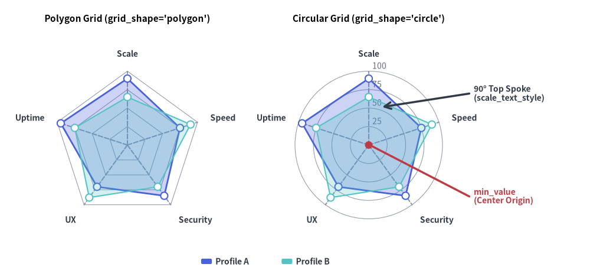
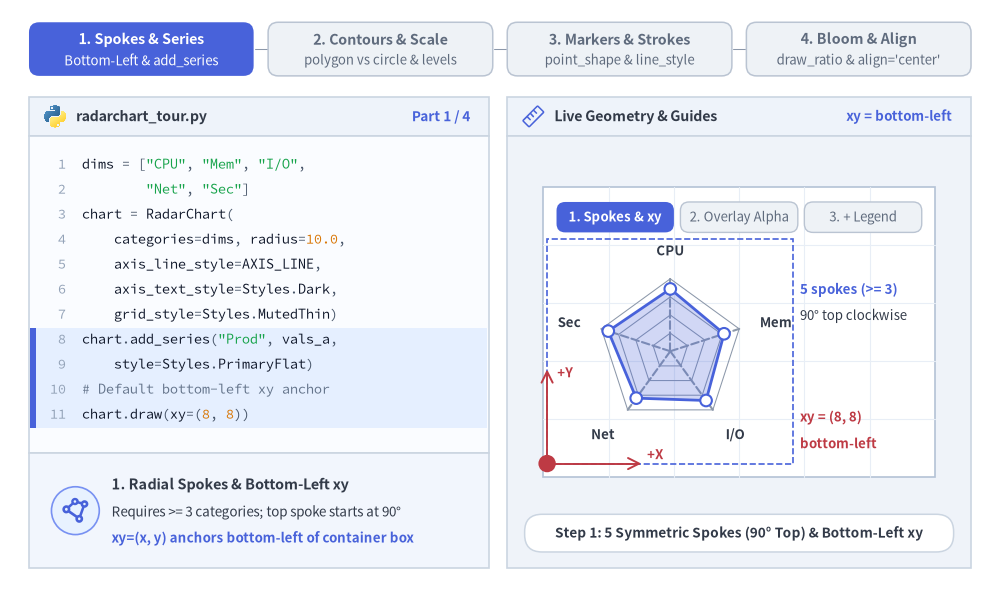
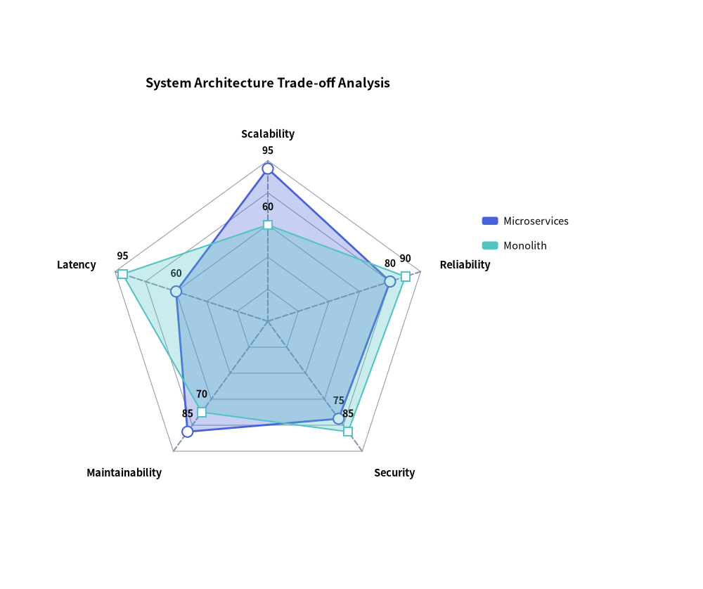
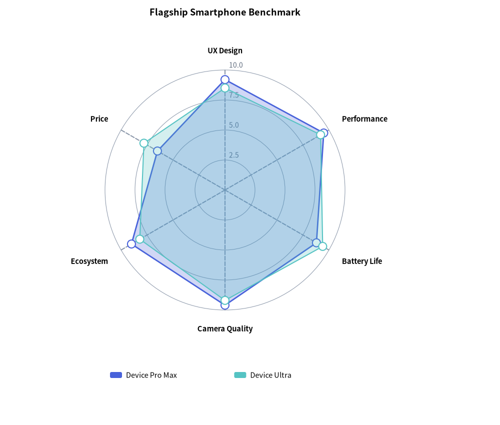

Radar Chart（レーダーチャート）：多変量評価とスパイダープロット
RadarChart（drawlib.charts.radar、別名スパイダーチャート／スターチャート）は、共通の中心原点から放射状に伸びる 3 軸以上の対称な次元にわたって多変量プロファイルを評価します。スキルマトリクス、競合ベンチマーク比較、システムアーキテクチャのトレードオフ分析などに幅広く活用されます。

Source Code
from drawlib.canvas import save, setup
from drawlib.charts.radar import RadarChart
from drawlib.lines import line
from drawlib.shapes import circle
from drawlib.styles import Styles
from drawlib.text import text
setup(width=132, height=62)
dims = ["Scale", "Speed", "Security", "UX", "Uptime"]
vals_a = [90, 75, 85, 70, 95]
vals_b = [65, 90, 70, 88, 75]
# Left: Polygon Grid
poly_radar = RadarChart(
categories=dims,
axis_line_style=Styles.MutedDashed,
axis_text_style=Styles.DarkBold.patch(text_size=10.0),
grid_style=Styles.MutedThin,
radius=16.5,
min_value=0.0,
max_value=100.0,
levels=4,
grid_shape="polygon",
title="Polygon Grid (grid_shape='polygon')",
title_style=Styles.BlackBold.patch(text_size=11.0),
)
poly_radar.add_series("Profile A", vals_a, style=Styles.PrimaryFlat, fill_alpha=0.28)
poly_radar.add_series("Profile B", vals_b, style=Styles.SecondaryNeutral, fill_alpha=0.25, line_style="dashed")
poly_radar.draw(xy=(4.0, 5.0))
# Right: Circular Grid with Scale Labels
circ_radar = RadarChart(
categories=dims,
axis_line_style=Styles.MutedDashed,
axis_text_style=Styles.DarkBold.patch(text_size=10.0),
grid_style=Styles.MutedThin,
scale_text_style=Styles.Muted.patch(text_size=10.0),
scale_format="{:.0f}",
radius=16.5,
min_value=0.0,
max_value=100.0,
levels=4,
grid_shape="circle",
title="Circular Grid (grid_shape='circle')",
title_style=Styles.BlackBold.patch(text_size=11.0),
)
circ_radar.add_series("Profile A", vals_a, style=Styles.PrimaryFlat, fill_alpha=0.28)
circ_radar.add_series("Profile B", vals_b, style=Styles.SecondaryNeutral, fill_alpha=0.25, line_style="dashed")
circ_radar.draw(xy=(58.0, 5.0))
# Callout annotations on Right RadarChart using exact center coordinates
rw, rh = circ_radar.get_size()
rcx = 58.0 + rw / 2.0
rcy = 5.0 + (rh - 6.0) / 2.0
circle((rcx, rcy), radius=0.85, style=Styles.DangerFlat)
line((rcx + 0.8, rcy - 0.3), (105.0, 18.0), style=Styles.DangerBold)
text((106.0, 18.0), "min_value\n(Center Origin)", style=Styles.DangerBold.patch(text_size=10.0, halign="left"))
line((rcx + 3.0, rcy + 8.5), (105.0, 41.0), arrow_head="<-", style=Styles.DarkBold)
text((106.0, 41.0), "90° Top Spoke\n(scale_text_style)", style=Styles.DarkBold.patch(text_size=10.0, halign="left"))
circ_radar.draw_legend(xy=(45.0, 3.5), text_style=Styles.DarkBold.patch(text_size=10.0), orientation="horizontal")
save()
1. 基本概念と基本的な使い方
RadarChart は 3 本以上の対称な放射軸（categories、axis_line_style）にわたって閉じた多変量ポリゴンを描画し、デフォルトでコンテナボックスの左下 (x, y) を基準にアンカーします（align="center" でレーダーの中心ハブに直接ピン留めも可）。直線的なスパイダーウェブ（grid_shape="polygon"）と同心円リング（grid_shape="circle"）の切り替え、スケール目盛り（configure_axis）・頂点マーカー（point_shape）・線種パターン（line_style）の調整、および中心から外側へ広がる放射アニメーション（draw_ratio）をサポートしています。

Source Code
from __future__ import annotations
import math
from drawlib.anim import Animation
from drawlib.canvas import save, setup
from drawlib.charts.radar import RadarChart
from drawlib.icons import code as code_icons
from drawlib.icons import phosphor
from drawlib.lines import line, lines
from drawlib.shapes import circle, rectangle
from drawlib.smartarts import SourceCode, SourceCodeStyles
from drawlib.styles import Styles
from drawlib.text import text
W, H = 138.0, 82.0
setup(width=W, height=H)
anim = Animation(fps=10.0, loop=0)
CODE_TEXT_SIZE = 10.0
PT_TO_CANVAS = W / 720.0
FONT_CANVAS = CODE_TEXT_SIZE * PT_TO_CANVAS
LINE_H = FONT_CANVAS * 1.8
PAD_Y = FONT_CANVAS * 1.2
CODE_STYLES = SourceCodeStyles.get("default", font_lang="en", text_size=CODE_TEXT_SIZE).patch(
box_style=Styles.Neutral.patch(shape_fill_color=(0, 0, 0, 0), shape_line_width=0),
)
PANE_HEADER = Styles.Neutral.patch(
shape_fill_color=(238, 243, 250),
shape_line_color=(203, 213, 225),
shape_line_width=1.2,
shape_r=0.0,
)
EDITOR_BODY = Styles.Neutral.patch(
shape_fill_color=(250, 252, 255),
shape_line_color=(203, 213, 225),
shape_line_width=1.2,
shape_r=0.0,
)
TAKEAWAY_BODY = Styles.Neutral.patch(
shape_fill_color=(242, 246, 253),
shape_line_color=(203, 213, 225),
shape_line_width=1.2,
shape_r=0.0,
)
STUDIO_BODY = Styles.Neutral.patch(
shape_fill_color=(239, 243, 249),
shape_line_color=(203, 213, 225),
shape_line_width=1.2,
shape_r=0.0,
)
PART_ITEMS = [
("1. Spokes & Series", "Bottom-Left & add_series"),
("2. Contours & Scale", "polygon vs circle & levels"),
("3. Markers & Strokes", "point_shape & line_style"),
("4. Bloom & Align", "draw_ratio & align='center'"),
]
def draw_step_bar(active_part: int) -> None:
"""Draw top 4-part progress bar (active_part is 1..4)."""
pill_w = 31.0
pill_h = 7.4
gap = 2.0
start_x = 4.0 + pill_w / 2.0
cy = 75.2
for idx, (label, sublabel) in enumerate(PART_ITEMS, start=1):
cx = start_x + (idx - 1) * (pill_w + gap)
if idx > 1:
prev_cx = cx - (pill_w + gap)
line(
(prev_cx + pill_w / 2.0 + 0.2, cy),
(cx - pill_w / 2.0 - 0.2, cy),
style=Styles.PrimaryBold if idx <= active_part else Styles.MutedThin,
)
if idx == active_part:
st = Styles.PrimaryFlat.patch(shape_r=1.4)
tst = Styles.WhiteBold.patch(text_size=10.3)
sub_tst = Styles.White.patch(text_size=9.5)
elif idx < active_part:
st = Styles.PrimaryNeutral.patch(shape_r=1.4, shape_line_width=1.1)
tst = Styles.PrimaryBold.patch(text_size=10.3)
sub_tst = Styles.Primary.patch(text_size=9.5)
else:
st = Styles.Neutral.patch(shape_r=1.4, shape_line_width=1.1)
tst = Styles.MutedBold.patch(text_size=10.3)
sub_tst = Styles.Muted.patch(text_size=9.5)
rectangle((cx, cy), width=pill_w, height=pill_h, style=st)
text((cx, cy + 1.35), label, style=tst)
text((cx, cy - 1.55), sublabel, style=sub_tst)
def draw_left_pane(
active_part: int,
code_lines: list[str],
hl_range: tuple[int, int],
icon_fn: object,
summary_title: str,
summary_line1: str,
summary_line2: str,
) -> None:
"""Draw left Python code editor + bottom concept takeaway card."""
x0, w = 4.0, 63.5
cx = x0 + w / 2.0
top_y = 63.2
header_h = 5.4
editor_h = 43.8
takeaway_h = 15.8
rectangle((cx, top_y + header_h / 2.0), width=w, height=header_h, style=PANE_HEADER)
code_icons.python((x0 + 3.6, top_y + header_h / 2.0), width=3.4, style=Styles.Neutral)
text(
(x0 + 6.5, top_y + header_h / 2.0),
"radarchart_tour.py",
style=Styles.DarkBold.patch(text_size=10.2, halign="left"),
)
text(
(x0 + w - 2.6, top_y + header_h / 2.0),
f"Part {active_part} / 4",
style=Styles.PrimaryBold.patch(text_size=9.8, halign="right"),
)
rectangle((cx, top_y - editor_h / 2.0), width=w, height=editor_h, style=EDITOR_BODY)
hl_start, hl_end = hl_range
hl_top = top_y - PAD_Y - hl_start * LINE_H
hl_bot = top_y - PAD_Y - (hl_end + 1) * LINE_H
hl_cy = (hl_top + hl_bot) / 2.0
hl_h = hl_top - hl_bot
rectangle(
(cx, hl_cy),
width=w - 0.6,
height=hl_h,
style=Styles.Neutral.patch(shape_fill_color=(229, 239, 255), shape_line_width=0),
)
rectangle(
(x0 + 0.55, hl_cy),
width=0.9,
height=hl_h,
style=Styles.PrimaryFlat.patch(shape_line_width=0),
)
SourceCode.draw(
xy=(x0, top_y),
width=w,
code="\n".join(code_lines),
styles=CODE_STYLES,
code_lang="python",
show_linenum=True,
align="top_left",
)
take_cy = 3.6 + takeaway_h / 2.0
rectangle((cx, take_cy), width=w, height=takeaway_h, style=TAKEAWAY_BODY)
circle(
(x0 + 6.4, take_cy),
radius=3.3,
style=Styles.PrimaryNeutral.patch(shape_line_width=1.2),
)
icon_fn((x0 + 6.4, take_cy), width=3.8, style=Styles.PrimaryBold) # type: ignore[operator]
text(
(x0 + 11.4, take_cy + 3.6),
summary_title,
style=Styles.DarkBold.patch(text_size=10.4, halign="left"),
)
text(
(x0 + 11.4, take_cy - 0.2),
summary_line1,
style=Styles.Dark.patch(text_size=9.7, halign="left"),
)
text(
(x0 + 11.4, take_cy - 3.8),
summary_line2,
style=Styles.PrimaryBold.patch(text_size=9.6, halign="left"),
)
def draw_geometry_studio(param_badge: str, footer_caption: str) -> tuple[float, float]:
"""Draw right geometry lab shell, inner coordinate sheet with subtle grid, and footer."""
x0, w = 70.0, 64.0
cx = x0 + w / 2.0
top_y = 63.2
header_h = 5.4
body_h = 59.6
rectangle((cx, top_y + header_h / 2.0), width=w, height=header_h, style=PANE_HEADER)
phosphor.ruler((x0 + 3.6, top_y + header_h / 2.0), width=3.4, style=Styles.Primary)
text(
(x0 + 6.5, top_y + header_h / 2.0),
"Live Geometry & Guides",
style=Styles.DarkBold.patch(text_size=10.2, halign="left"),
)
text(
(x0 + w - 2.6, top_y + header_h / 2.0),
param_badge,
style=Styles.PrimaryBold.patch(text_size=9.6, halign="right"),
)
rectangle((cx, 3.6 + body_h / 2.0), width=w, height=body_h, style=STUDIO_BODY)
sheet_cx, sheet_cy = cx, 36.2
sheet_w, sheet_h = 54.0, 40.0
sx0, sy0 = sheet_cx - sheet_w / 2.0, sheet_cy - sheet_h / 2.0
rectangle(
(sheet_cx, sheet_cy),
width=sheet_w,
height=sheet_h,
style=Styles.Neutral.patch(
shape_fill_color=(255, 255, 255),
shape_line_color=(180, 194, 214),
shape_line_width=1.2,
),
)
g_st = Styles.MutedThin.patch(line_color=(232, 238, 246), line_width=0.8)
for gx in range(1, 6):
vx = sx0 + gx * (sheet_w / 6.0)
line((vx, sy0), (vx, sy0 + sheet_h), style=g_st)
for gy in range(1, 5):
vy = sy0 + gy * (sheet_h / 5.0)
line((sx0, vy), (sx0 + sheet_w, vy), style=g_st)
rectangle(
(cx, 8.4),
width=59.2,
height=5.2,
style=Styles.Neutral.patch(
shape_fill_color=(255, 255, 255),
shape_line_color=(203, 213, 225),
shape_line_width=1.1,
shape_r=2.4,
),
text=footer_caption,
text_style=Styles.DarkBold.patch(text_size=9.8),
)
return sheet_cx, sheet_cy
def draw_sub_pills(scx: float, labels: list[str], active_idx: int) -> None:
"""Draw 3-step tracker pills near the top of the studio sheet."""
pw, ph, pgap = 16.2, 4.2, 0.9
p_start = scx - (3 * pw + 2 * pgap) / 2.0 + pw / 2.0
for idx, lbl in enumerate(labels):
px = p_start + idx * (pw + pgap)
if idx == active_idx:
pst = Styles.PrimaryFlat.patch(shape_r=1.2)
ptst = Styles.WhiteBold.patch(text_size=9.5)
elif idx < active_idx:
pst = Styles.PrimaryNeutral.patch(shape_r=1.2, shape_line_width=1.0)
ptst = Styles.PrimaryBold.patch(text_size=9.5)
else:
pst = Styles.Neutral.patch(shape_r=1.2, shape_line_width=1.0)
ptst = Styles.Muted.patch(text_size=9.5)
rectangle((px, 52.0), width=pw, height=ph, style=pst, text=lbl, text_style=ptst)
DIMS = ["CPU", "Mem", "I/O", "Net", "Sec"]
VALS_A = [86.0, 78.0, 84.0, 80.0, 90.0]
VALS_B = [42.0, 62.0, 52.0, 55.0, 58.0]
AXIS_LINE = Styles.MutedDashed
AXIS_TEXT = Styles.DarkBold.patch(text_size=9.6)
SCALE_TEXT = Styles.Muted.patch(text_size=9.5)
VAL_TEXT = Styles.PrimaryBold.patch(text_size=9.5)
LEG_STYLE = Styles.Dark.patch(text_size=9.6)
PX0, PY0 = 75.5, 18.0
R_RAD, BOX_W, BOX_H = 10.0, 34.0, 31.0
LEG_XY = (110.4, 43.2)
# =========================================================================
# Part 1: Spokes & Series — Bottom-Left xy, 5 Spokes, Overlay & Legend
# =========================================================================
PART1_STATES = [
(
"spokes_1series",
3.3,
[
'dims = ["CPU", "Mem", "I/O",',
' "Net", "Sec"]',
"chart = RadarChart(",
" categories=dims, radius=10.0,",
" axis_line_style=AXIS_LINE,",
" axis_text_style=Styles.Dark,",
" grid_style=Styles.MutedThin)",
'chart.add_series("Prod", vals_a,',
" style=Styles.PrimaryFlat)",
"# Default bottom-left xy anchor",
"chart.draw(xy=(8, 8))",
],
(7, 10),
"xy = bottom-left",
"Step 1: 5 Symmetric Spokes (90° Top) & Bottom-Left xy",
"1. Radial Spokes & Bottom-Left xy",
"Requires >= 3 categories; top spoke starts at 90°",
"xy=(x, y) anchors bottom-left of container box",
),
(
"overlay_2series",
3.3,
[
"chart = RadarChart(",
" categories=dims, radius=10.0,",
" axis_line_style=AXIS_LINE,",
" axis_text_style=Styles.Dark,",
" grid_style=Styles.MutedThin)",
'chart.add_series("Prod", vals_a,',
" style=Styles.PrimaryFlat,",
" fill_alpha=0.25)",
'chart.add_series("Base", vals_b,',
" style=Styles.SecondaryNeutral,",
" fill_alpha=0.25)",
],
(5, 10),
"fill_alpha = 0.25",
"Step 2: Overlay Focal & Neutral Polygons (fill_alpha=0.25)",
"2. Translucent Multi-Series Overlay",
"fill_alpha=0.25 keeps overlapping areas readable",
"Pair 1 PrimaryFlat focal profile with neutral Base",
),
(
"with_legend",
3.4,
[
"chart = RadarChart(",
" categories=dims, radius=10.0,",
" axis_line_style=AXIS_LINE,",
" axis_text_style=Styles.Dark,",
" grid_style=Styles.MutedThin)",
'chart.add_series("Prod", vals_a,',
" style=Styles.PrimaryFlat)",
'chart.add_series("Base", vals_b,',
" style=Styles.SecondaryNeutral)",
"chart.draw(xy=(8, 8))",
"chart.draw_legend((42, 34), DARK)",
],
(9, 10),
"draw_legend()",
"Step 3: Pair Overlaid Polygons with chart.draw_legend()",
"3. Decoupled Series Legend",
"draw_legend(xy=...) renders series swatches cleanly",
"Symmetric 5-axis web fits compactly with legend",
),
]
for p1_idx, (p1_mode, dur, code_1, hl_rng, badge_txt, foot_txt, s_t, s_1, s_2) in enumerate(PART1_STATES):
with anim.frame(duration=dur):
draw_step_bar(1)
draw_left_pane(1, code_1, hl_rng, phosphor.polygon, s_t, s_1, s_2)
scx, scy = draw_geometry_studio(badge_txt, foot_txt)
draw_sub_pills(scx, ["1. Spokes & xy", "2. Overlay Alpha", "3. + Legend"], p1_idx)
chart = RadarChart(
categories=DIMS,
axis_line_style=AXIS_LINE,
axis_text_style=AXIS_TEXT,
grid_style=Styles.MutedThin,
radius=R_RAD,
min_value=0.0,
max_value=100.0,
levels=4,
width=BOX_W,
height=BOX_H,
)
chart.add_series("Prod", VALS_A, style=Styles.PrimaryFlat, fill_alpha=0.25)
if p1_mode != "spokes_1series":
chart.add_series("Base", VALS_B, style=Styles.SecondaryNeutral, fill_alpha=0.25)
rcx, rcy = PX0 + BOX_W / 2.0, PY0 + BOX_H / 2.0
chart.draw(xy=(PX0, PY0))
if p1_mode == "spokes_1series":
rectangle(
(rcx, rcy),
width=BOX_W,
height=BOX_H,
style=Styles.PrimaryDashed.patch(shape_fill_color=(0, 0, 0, 0), shape_line_width=1.2),
)
line(
(PX0, PY0),
(PX0, PY0 + 13.0),
arrow_head="->",
style=Styles.DangerBold.patch(line_width=1.4),
)
text((PX0 + 1.4, PY0 + 12.6), "+Y", style=Styles.DangerBold.patch(text_size=9.5, halign="left"))
line(
(PX0, PY0),
(PX0 + 13.0, PY0),
arrow_head="->",
style=Styles.DangerBold.patch(line_width=1.4),
)
text((PX0 + 13.8, PY0 + 1.3), "+X", style=Styles.DangerBold.patch(text_size=9.5, halign="left"))
circle((PX0, PY0), radius=1.2, style=Styles.DangerFlat)
text(
(110.4, 42.0),
"5 spokes (>= 3)",
style=Styles.PrimaryBold.patch(text_size=9.6, halign="left"),
)
text(
(110.4, 38.4),
"90° top clockwise",
style=Styles.Dark.patch(text_size=9.5, halign="left"),
)
text(
(110.4, 24.4),
"xy = (8, 8)",
style=Styles.DangerBold.patch(text_size=9.6, halign="left"),
)
text(
(110.4, 20.8),
"bottom-left",
style=Styles.DangerBold.patch(text_size=9.5, halign="left"),
)
elif p1_mode == "overlay_2series":
text(
(110.4, 37.5),
"fill_alpha = 0.25",
style=Styles.PrimaryBold.patch(text_size=9.6, halign="left"),
)
text(
(110.4, 33.8),
"2 overlaid profiles",
style=Styles.Dark.patch(text_size=9.5, halign="left"),
)
else:
chart.draw_legend(xy=LEG_XY, text_style=LEG_STYLE)
rectangle(
(115.4, 41.4),
width=12.4,
height=7.2,
style=Styles.PrimaryDashed.patch(shape_fill_color=(0, 0, 0, 0), shape_line_width=1.1, shape_r=1.0),
)
text(
(110.4, 25.4),
"draw_legend(xy)",
style=Styles.PrimaryBold.patch(text_size=9.6, halign="left"),
)
text(
(110.4, 21.8),
"series swatches",
style=Styles.Dark.patch(text_size=9.5, halign="left"),
)
# =========================================================================
# Part 2: Contours & Scale — polygon vs circle & configure_axis(levels=4)
# =========================================================================
PART2_STATES = [
(
"polygon",
False,
5,
3.3,
[
"chart = RadarChart(",
" categories=dims, radius=10.0,",
" axis_line_style=AXIS_LINE,",
" axis_text_style=Styles.Dark,",
" grid_style=Styles.MutedThin,",
' grid_shape="polygon",',
" levels=5)",
'chart.add_series("Prod", vals_a,',
" style=Styles.PrimaryFlat)",
'chart.add_series("Base", vals_b,',
" style=Styles.SecondaryNeutral)",
],
(4, 6),
'grid="polygon"',
'grid_shape="polygon": Straight Spider-Web Contours',
'Polygonal Spider Web ("polygon")',
"Default polygon connects spoke ticks with straight segments",
"Sharp geometric facets highlight linear trade-offs",
),
(
"circle",
False,
5,
3.3,
[
"chart = RadarChart(",
" categories=dims, radius=10.0,",
" axis_line_style=AXIS_LINE,",
" axis_text_style=Styles.Dark,",
" grid_style=Styles.MutedThin,",
' grid_shape="circle",',
" levels=5)",
'chart.add_series("Prod", vals_a,',
" style=Styles.PrimaryFlat)",
'chart.add_series("Base", vals_b,',
" style=Styles.SecondaryNeutral)",
],
(4, 6),
'grid="circle"',
'grid_shape="circle": Concentric Polar Ring Contours',
'Circular Polar Rings ("circle")',
"Draws smooth concentric circles around center hub",
"True radial distance contours from min_value origin",
),
(
"circle",
True,
4,
3.5,
[
"chart = RadarChart(",
" categories=dims, radius=10.0,",
" axis_line_style=AXIS_LINE,",
" grid_style=Styles.MutedThin,",
' grid_shape="circle",',
" scale_text_style=SCALE_TEXT)",
"chart.configure_axis(",
" min_value=0, max_value=100,",
" levels=4,",
' scale_format="{:.0f}")',
"chart.draw(xy=(8, 8))",
],
(5, 9),
"levels=4 & scale",
"configure_axis(0..100, levels=4) + Top-Spoke Scale Labels",
"Axis Bounds & Scale Ticks (configure_axis)",
"Sets min_value, max_value, levels & scale_format",
"scale_text_style labels rings along 90° top spoke",
),
]
for p2_idx, (g_shape, show_sc, n_lvl, dur, code_2, hl_rng, badge_txt, foot_txt, s_t, s_1, s_2) in enumerate(
PART2_STATES
):
with anim.frame(duration=dur):
draw_step_bar(2)
draw_left_pane(2, code_2, hl_rng, phosphor.target, s_t, s_1, s_2)
scx, scy = draw_geometry_studio(badge_txt, foot_txt)
draw_sub_pills(scx, ['"polygon" Web', '"circle" Rings', "Scale & levels=4"], p2_idx)
chart = RadarChart(
categories=DIMS,
axis_line_style=AXIS_LINE,
axis_text_style=AXIS_TEXT,
grid_style=Styles.MutedThin.patch(line_color=(175, 190, 210), line_width=1.0),
scale_text_style=SCALE_TEXT if show_sc else None,
radius=R_RAD,
grid_shape=g_shape, # type: ignore[arg-type]
width=BOX_W,
height=BOX_H,
)
chart.configure_axis(min_value=0.0, max_value=100.0, levels=n_lvl, scale_format="{:.0f}")
chart.add_series("Prod", VALS_A, style=Styles.PrimaryFlat, fill_alpha=0.25)
chart.add_series(
"Base",
VALS_B,
style=Styles.SecondaryNeutral,
fill_alpha=0.25,
point_shape="none" if show_sc else "circle",
)
rcx2, rcy2 = PX0 + BOX_W / 2.0, PY0 + BOX_H / 2.0
chart.draw(xy=(PX0, PY0))
chart.draw_legend(xy=LEG_XY, text_style=LEG_STYLE)
if p2_idx == 0:
text(
(110.4, 25.4),
'grid="polygon"',
style=Styles.PrimaryBold.patch(text_size=9.6, halign="left"),
)
text(
(110.4, 21.8),
"5 straight rings",
style=Styles.Dark.patch(text_size=9.5, halign="left"),
)
elif p2_idx == 1:
text(
(110.4, 25.4),
'grid="circle"',
style=Styles.PrimaryBold.patch(text_size=9.6, halign="left"),
)
text(
(110.4, 21.8),
"5 polar circles",
style=Styles.Dark.patch(text_size=9.5, halign="left"),
)
else:
line(
(108.5, 44.2),
(rcx2 + 4.4, rcy2 + 9.2),
arrow_head="->",
style=Styles.PrimaryBold.patch(line_width=1.2),
)
text(
(110.4, 27.6),
"levels = 4",
style=Styles.PrimaryBold.patch(text_size=9.6, halign="left"),
)
text(
(110.4, 24.0),
"25, 50, 75, 100",
style=Styles.Dark.patch(text_size=9.5, halign="left"),
)
# =========================================================================
# Part 3: Markers & Strokes — line_style="dashed", point_shape & vertex vals
# =========================================================================
PART3_STATES = [
(
"dashed_ring",
3.3,
[
"chart = RadarChart(",
" categories=dims, radius=10.0,",
" axis_line_style=AXIS_LINE,",
" axis_text_style=Styles.Dark,",
" grid_style=Styles.MutedThin)",
'chart.add_series("Prod", vals_a,',
" style=Styles.PrimaryFlat)",
'chart.add_series("Base", vals_b,',
" style=Styles.SecondaryNeutral,",
' line_style="dashed",',
" line_width=2.2)",
],
(7, 10),
'line="dashed"',
'line_style="dashed": Distinct Baseline Perimeter Ring',
"Stroke Patterns (line_style, line_width)",
'Supports "solid", "dashed", "dotted", "dashdot"',
"Separates target/baseline rings without color clash",
),
(
"square_markers",
3.3,
[
"chart = RadarChart(",
" categories=dims, radius=10.0,",
" axis_line_style=AXIS_LINE,",
" axis_text_style=Styles.Dark,",
" grid_style=Styles.MutedThin)",
'chart.add_series("Prod", vals_a,',
" style=Styles.PrimaryFlat)",
'chart.add_series("Base", vals_b,',
" style=Styles.SecondaryNeutral,",
' line_style="dashed",',
' point_shape="square")',
],
(9, 10),
'point="square"',
'point_shape="square": Distinct Vertex Marker Geometry',
"Vertex Marker Shapes (point_shape)",
'Choose "circle" (default), "square", or "none"',
"White-filled markers pop cleanly on spoke intersections",
),
(
"vertex_labels",
3.5,
[
"chart = RadarChart(",
" categories=dims, radius=10.0,",
" axis_line_style=AXIS_LINE,",
" value_text_style=VAL_TEXT,",
' value_format="{:.0f}")',
'chart.add_series("Prod", vals_a,',
" style=Styles.PrimaryFlat)",
'chart.add_series("Base", vals_b,',
" style=Styles.SecondaryNeutral,",
' line_style="dashed",',
' point_shape="none")',
],
(3, 4),
"value_text_style",
"value_text_style + value_format: Exact Vertex Scores",
"Vertex Score Labels (value_text_style)",
"Prints formatted data values above active markers",
'Use point_shape="none" on Base to keep labels clean',
),
]
for p3_idx, (p3_mode, dur, code_3, hl_rng, badge_txt, foot_txt, s_t, s_1, s_2) in enumerate(PART3_STATES):
with anim.frame(duration=dur):
draw_step_bar(3)
draw_left_pane(3, code_3, hl_rng, phosphor.sliders_horizontal, s_t, s_1, s_2)
scx, scy = draw_geometry_studio(badge_txt, foot_txt)
draw_sub_pills(scx, ['line="dashed"', 'point="square"', "Vertex Labels"], p3_idx)
chart = RadarChart(
categories=DIMS,
axis_line_style=AXIS_LINE,
axis_text_style=AXIS_TEXT,
grid_style=Styles.MutedThin,
value_text_style=VAL_TEXT if p3_mode == "vertex_labels" else None,
value_format="{:.0f}",
radius=R_RAD,
min_value=0.0,
max_value=100.0,
levels=4,
width=BOX_W,
height=BOX_H,
)
chart.add_series("Prod", VALS_A, style=Styles.PrimaryFlat, fill_alpha=0.25)
if p3_mode == "dashed_ring":
chart.add_series(
"Base",
VALS_B,
style=Styles.SecondaryNeutral,
fill_alpha=0.22,
line_style="dashed",
line_width=2.2,
)
elif p3_mode == "square_markers":
chart.add_series(
"Base",
VALS_B,
style=Styles.SecondaryNeutral,
fill_alpha=0.22,
line_style="dashed",
point_shape="square",
point_size=0.95,
)
else:
chart.add_series(
"Base",
VALS_B,
style=Styles.SecondaryNeutral,
fill_alpha=0.20,
line_style="dashed",
point_shape="none",
)
chart.draw(xy=(PX0, PY0))
chart.draw_legend(xy=LEG_XY, text_style=LEG_STYLE)
if p3_mode == "dashed_ring":
text(
(110.2, 25.4),
'line="dashed"',
style=Styles.PrimaryBold.patch(text_size=9.6, halign="left"),
)
text(
(110.2, 21.8),
"baseline stroke",
style=Styles.Dark.patch(text_size=9.5, halign="left"),
)
elif p3_mode == "square_markers":
text(
(110.2, 25.4),
'point="square"',
style=Styles.PrimaryBold.patch(text_size=9.6, halign="left"),
)
text(
(110.2, 21.8),
"vs circle / none",
style=Styles.Dark.patch(text_size=9.5, halign="left"),
)
else:
text(
(110.2, 25.4),
"vertex scores",
style=Styles.PrimaryBold.patch(text_size=9.6, halign="left"),
)
text(
(110.2, 21.8),
'Base: "none"',
style=Styles.Dark.patch(text_size=9.5, halign="left"),
)
# =========================================================================
# Part 4: Bloom & Align — draw_ratio=0.6, s2.show=False & align="center"
# =========================================================================
PART4_STATES = [
(
"bloom_60",
3.3,
[
"chart = RadarChart(",
" categories=dims, radius=10.0,",
" axis_line_style=AXIS_LINE,",
" axis_text_style=Styles.Dark,",
" grid_style=Styles.MutedThin)",
"s1 = chart.add_series(",
' "Prod", vals_a,',
" style=Styles.PrimaryFlat,",
" draw_ratio=0.6)",
's2 = chart.add_series("Base",',
" vals_b, style=BASE_STYLE)",
],
(5, 8),
"draw_ratio = 0.6",
"draw_ratio=0.6: Radial Center-Outward Polygon Bloom",
"Radial Outward Bloom (draw_ratio)",
"Scales vertex radii by draw_ratio (0.0..1.0) from hub",
"Great for smooth radar entrance & transition frames",
),
(
"hide_s2",
3.3,
[
"chart = RadarChart(",
" categories=dims, radius=10.0,",
" axis_line_style=AXIS_LINE,",
" axis_text_style=Styles.Dark,",
" grid_style=Styles.MutedThin)",
'chart.add_series("Prod", vals_a,',
" style=Styles.PrimaryFlat)",
's2 = chart.add_series("Base",',
" vals_b, style=BASE_STYLE)",
"s2.show = False",
"chart.draw(xy=(8, 8))",
],
(9, 9),
"s2.show = False",
"s2.show = False: Hides Series While Keeping Scale Fixed",
"Scale-Preserving Visibility (.show = False)",
"Toggles polygon & legend swatch off in place",
"Axis max_value & spokes stay locked without jumping",
),
(
"align_center",
3.5,
[
"chart = RadarChart(",
" categories=dims, radius=10.0,",
" axis_line_style=AXIS_LINE,",
" axis_text_style=Styles.Dark,",
" grid_style=Styles.MutedThin)",
'chart.add_series("Prod", vals_a,',
" style=Styles.PrimaryFlat)",
'chart.add_series("Base", vals_b,',
" style=Styles.SecondaryNeutral)",
"chart.draw(",
' xy=(34, 27), align="center")',
],
(9, 10),
'align = "center"',
'align="center": Pins xy=(cx, cy) Directly at Radar Hub!',
'Centered Hub Anchor (align="center")',
"Places radar origin hub directly on xy=(cx, cy)",
"Aligns spider webs effortlessly to canvas centerlines",
),
]
for p4_idx, (p4_mode, dur, code_4, hl_rng, badge_txt, foot_txt, s_t, s_1, s_2) in enumerate(PART4_STATES):
with anim.frame(duration=dur):
draw_step_bar(4)
draw_left_pane(4, code_4, hl_rng, phosphor.crosshair, s_t, s_1, s_2)
scx, scy = draw_geometry_studio(badge_txt, foot_txt)
draw_sub_pills(scx, ["draw_ratio = 0.6", "s2.show = False", 'align="center"'], p4_idx)
if p4_mode == "bloom_60":
chart = RadarChart(
categories=DIMS,
axis_line_style=AXIS_LINE,
axis_text_style=AXIS_TEXT,
grid_style=Styles.MutedThin,
radius=R_RAD,
min_value=0.0,
max_value=100.0,
levels=4,
width=BOX_W,
height=BOX_H,
)
chart.add_series("Prod", VALS_A, style=Styles.PrimaryFlat, fill_alpha=0.28, draw_ratio=0.6)
chart.add_series("Base", VALS_B, style=Styles.SecondaryNeutral, fill_alpha=0.22, line_style="dashed")
rcx4, rcy4 = PX0 + BOX_W / 2.0, PY0 + BOX_H / 2.0
chart.draw(xy=(PX0, PY0))
chart.draw_legend(xy=LEG_XY, text_style=LEG_STYLE)
# Ghost full-target polygon for Prod (100% bloom)
angs = [math.radians(90.0 - i * 72.0) for i in range(5)]
full_pts = [
(rcx4 + R_RAD * (v / 100.0) * math.cos(a), rcy4 + R_RAD * (v / 100.0) * math.sin(a))
for v, a in zip(VALS_A, angs, strict=False)
]
lines(xys=full_pts + [full_pts[0]], style=Styles.PrimaryDashed.patch(line_width=1.2))
text(
(110.2, 25.4),
"draw_ratio = 0.6",
style=Styles.PrimaryBold.patch(text_size=9.6, halign="left"),
)
text(
(110.2, 21.8),
"60% radial bloom",
style=Styles.Dark.patch(text_size=9.5, halign="left"),
)
elif p4_mode == "hide_s2":
chart = RadarChart(
categories=DIMS,
axis_line_style=AXIS_LINE,
axis_text_style=AXIS_TEXT,
grid_style=Styles.MutedThin,
radius=R_RAD,
min_value=0.0,
max_value=100.0,
levels=4,
width=BOX_W,
height=BOX_H,
)
chart.add_series("Prod", VALS_A, style=Styles.PrimaryFlat, fill_alpha=0.25)
s2 = chart.add_series("Base", VALS_B, style=Styles.SecondaryNeutral, fill_alpha=0.22, line_style="dashed")
s2.show = False
chart.draw(xy=(PX0, PY0))
chart.draw_legend(xy=LEG_XY, text_style=LEG_STYLE)
text(
(110.2, 25.4),
"s2.show = False",
style=Styles.PrimaryBold.patch(text_size=9.6, halign="left"),
)
text(
(110.2, 21.8),
"Base hidden cleanly",
style=Styles.Dark.patch(text_size=9.5, halign="left"),
)
else:
cx_a, cy_a = scx, 34.0
chart = RadarChart(
categories=DIMS,
axis_line_style=AXIS_LINE,
axis_text_style=AXIS_TEXT,
grid_style=Styles.MutedThin,
radius=10.0,
min_value=0.0,
max_value=100.0,
levels=4,
width=34.8,
height=30.2,
)
chart.add_series("Prod", VALS_A, style=Styles.PrimaryFlat, fill_alpha=0.25)
chart.add_series("Base", VALS_B, style=Styles.SecondaryNeutral, fill_alpha=0.22, line_style="dashed")
chart.draw(xy=(cx_a, cy_a), align="center")
rectangle(
(cx_a, cy_a),
width=34.8,
height=30.2,
style=Styles.PrimaryDashed.patch(shape_fill_color=(0, 0, 0, 0), shape_line_width=1.2),
)
line((cx_a - 19.8, cy_a), (cx_a - 17.4, cy_a), style=Styles.DangerBold.patch(line_width=1.5))
line((cx_a + 17.4, cy_a), (cx_a + 19.8, cy_a), style=Styles.DangerBold.patch(line_width=1.5))
circle(
(cx_a, cy_a),
radius=1.6,
style=Styles.Neutral.patch(shape_fill_color=(255, 255, 255), shape_line_width=0),
)
circle((cx_a, cy_a), radius=1.15, style=Styles.DangerFlat)
text(
(cx_a, 17.2),
'xy = (34, 27) • align="center"',
style=Styles.DangerBold.patch(text_size=9.6),
)
save()
- 放射スポーク・重ね合わせ系列・アンカー（
categories,add_series,fill_alpha）:3軸以上の対称な放射軸（90°の上端スポークから時計回りに配置）を定義し、左下xyにアンカーされた半透明の系列ポリゴン（fill_alpha=0.25）を重ね合わせ、chart.draw_legend(...)と組み合わせます。 - 多角形／円形の等高線グリッドとスケール（
grid_shape,configure_axis,scale_text_style）:levels個の同心リングに対して"polygon"のクモの巣グリッドまたは"circle"の極座標リングを選択でき、configure_axis(...)で放射スケールの範囲（min_value、max_value、scale_format）を調整できます。 - 頂点マーカー・線種パターン・数値ラベル（
point_shape,line_style,value_text_style）:line_style（"solid"、"dashed"、"dotted"、"dashdot"）、point_shape（"circle"、"square"、"none"）、および任意の頂点数値ラベル（value_text_style）によって、ベースラインと注目プロファイルを明確に区別できます。 - 放射状展開・表示切替・ハブ中心ピン留め（
draw_ratio,show,align="center"）:draw_ratio（"bottom_to_top"または"left_to_right"）で中心ハブから外側へ系列を展開したり、series.show = Falseで個別プロファイルを非表示化したり、align="center"を渡してxy=(cx, cy)をレーダーの中心ハブにピン留めしたりできます。
2. 多角形グリッドによるアーキテクチャ比較
多角形グリッド線（grid_shape="polygon"）は放射スポークと直線で結ばれるため、非機能要件全体にわたるアーキテクチャ上のトレードオフを比較しやすくなります。
from drawlib.canvas import save, setup
from drawlib.charts.radar import RadarChart
from drawlib.styles import Styles
setup(width=105, height=88)
chart = RadarChart(
categories=["Scalability", "Reliability", "Security", "Maintainability", "Latency"],
axis_line_style=Styles.MutedDashed,
axis_text_style=Styles.BlackBold.patch(text_size=10.5),
grid_style=Styles.MutedThin,
value_text_style=Styles.BlackBold.patch(text_size=10.0),
radius=24.0,
min_value=0.0,
max_value=100.0,
levels=5,
grid_shape="polygon",
title="System Architecture Trade-off Analysis",
title_style=Styles.BlackBold.patch(text_size=13.0),
value_format="{:.0f}",
)
chart.add_series("Microservices", [95, 80, 75, 85, 60], style=Styles.PrimaryFlat, fill_alpha=0.3)
chart.add_series(
"Monolith",
[60, 90, 85, 70, 95],
style=Styles.SecondaryNeutral,
fill_alpha=0.3,
line_style="dashed",
point_shape="square",
)
chart.draw(xy=(8.0, 8.0))
chart.draw_legend(xy=(72.0, 55.0), text_style=Styles.Black.patch(text_size=10.5))
save()

3. 円形グリッドによる製品ベンチマーク
grid_shape="circle" に scale_text_style と configure_axis(...) を組み合わせると、数値スケールラベル付きの滑らかな同心円リングを描画できます。
from drawlib.canvas import save, setup
from drawlib.charts.radar import RadarChart
from drawlib.styles import Styles
setup(width=100, height=85)
chart = RadarChart(
categories=["UX Design", "Performance", "Battery Life", "Camera Quality", "Ecosystem", "Price"],
axis_line_style=Styles.MutedDashed,
axis_text_style=Styles.BlackBold.patch(text_size=10.5),
grid_style=Styles.MutedThin,
scale_text_style=Styles.Muted.patch(text_size=10.0),
radius=24.0,
levels=4,
grid_shape="circle",
title="Flagship Smartphone Benchmark",
title_style=Styles.BlackBold.patch(text_size=13.0),
)
chart.configure_axis(min_value=0.0, max_value=10.0, levels=4, scale_format="{:.1f}")
chart.add_series("Device Pro Max", [9.2, 9.5, 8.8, 9.6, 9.0, 6.5], style=Styles.PrimaryFlat)
chart.add_series("Device Ultra", [8.5, 9.2, 9.4, 9.2, 8.2, 7.8], style=Styles.SecondaryNeutral, line_style="dashed")
chart.draw(xy=(13.0, 15.0))
chart.draw_legend(xy=(22.0, 10.0), text_style=Styles.Black.patch(text_size=10.5), orientation="horizontal")
save()

4. API リファレンス
コンストラクタ（RadarChart）
すべてのコンストラクタ引数はキーワード専用引数（*）です。
from drawlib.charts.radar import DrawDirection, FormatterType, GridShape, RadarChart, Series
chart = RadarChart(
*,
categories: list[str],
axis_line_style: Style,
radius: float = 25.0,
min_value: float = 0.0,
max_value: float | None = None,
levels: int = 5,
grid_shape: GridShape = "polygon",
axis_text_style: Style | None = None,
grid_style: Style | None = None,
scale_text_style: Style | None = None,
scale_format: FormatterType = None,
value_text_style: Style | None = None,
value_format: FormatterType = None,
background_style: Style | None = None,
title: str = "",
title_style: Style | None = None,
width: float | None = None,
height: float | None = None,
)
| パラメータ | 型 | デフォルト | 説明 |
|---|---|---|---|
categories |
list[str] |
必須 | 外周に沿った放射評価軸の名称リスト（最低 3 要素が必須。3 未満の場合は ValueError が送出されます）。 |
axis_line_style |
Style |
必須 | 放射スポーク線に用いる必須アンカースタイル。 |
radius |
float |
25.0 |
キャンバス単位でのレーダー網の外周半径。 |
min_value |
float |
0.0 |
中心原点におけるベースラインデータ値。 |
max_value |
float | None |
None |
外周境界のスケール値。None の場合は系列データから自動算出されます。 |
levels |
int |
5 |
同心グリッドリングの段数（最小 1）。 |
grid_shape |
"polygon" | "circle" |
"polygon" |
同心グリッド輪郭の幾何形状（GridShape）。 |
axis_text_style |
Style | None |
None |
外周のカテゴリラベルのスタイル。None の場合は省略されます。 |
grid_style |
Style | None |
None |
同心グリッドリングのスタイル。None の場合は省略されます。 |
scale_text_style |
Style | None |
None |
上端スポークに沿って描画される数値スケールラベルのスタイル。None の場合は省略されます。 |
scale_format |
FormatterType |
None |
同心リングのスケールラベル用のフォーマット文字列または Callable[[float], str]。 |
value_text_style |
Style | None |
None |
系列の各頂点横に描画される数値ラベルのスタイル。None の場合は省略されます。 |
value_format |
FormatterType |
None |
系列の頂点数値用のフォーマット文字列または Callable[[float], str]。 |
background_style |
Style | None |
None |
チャート外枠の背景カードのスタイル。None の場合は省略されます。 |
title |
str |
"" |
コンテナ上部に描画されるチャートタイトル文字列。 |
title_style |
Style | None |
None |
title のタイポグラフィスタイル。タイトルを描画するには必須です。 |
width / height |
float | None |
None |
明示的なコンテナ寸法。None の場合は radius と title から自動算出されます。 |
メソッドとプロパティ
configure_axis(*, min_value: float | None = None, max_value: float | None = None, levels: int | None = None, scale_format: FormatterType = None) -> RadarChart: 放射スケールの範囲、同心リング数、およびスケールラベルのフォーマットをインプレースで更新します（メソッドチェーン用にselfを返します）。add_series(name: str, values: list[float], style: Style, fill_alpha: float = 0.25, line_width: float = 2.0, line_style: LineStyle = "solid", point_shape: PointShape = "circle", point_size: float = 0.8, legend_text_style: Style | None = None, *, show: bool = True, draw_ratio: float = 1.0, draw_direction: DrawDirection = "bottom_to_top") -> Series: 閉じたレーダー多角形系列を登録し、変更可能なSeriesインスタンスを返します。fill_alpha: ポリゴン塗りつぶしの不透明度（0.0〜1.0、デフォルトは0.25）。line_width/line_style: 外周ストロークの線幅（2.0）と線種パターン（"solid"、"dashed"、"dotted"、"dashdot"）。point_shape/point_size: 頂点マーカーの形状（"circle"、"square"、"none"）と半径（0.8）。draw_ratio&draw_direction: 部分空間レンダリング制御（"bottom_to_top"はすべての頂点を中心から放射状に外側へ展開し、"left_to_right"は外周に沿ってスポーク順にスイープします）。
get_size() -> tuple[float, float]: 算出されたチャートコンテナの(width, height)バウンディングボックスを返します。draw(xy: tuple[float, float] = (0.0, 0.0), *, radius: float | None = None, width: float | None = None, height: float | None = None, align: Literal["bottom_left", "center"] = "bottom_left", scale: float = 1.0) -> None:xyを基準（デフォルトは"bottom_left"、または"center"）としてチャートを描画します。一時的なradius/width/heightの上書きや均一なscaleにも対応しています。draw_legend(xy: tuple[float, float], text_style: Style, orientation: Literal["vertical", "horizontal"] = "vertical", swatch_width: float = 2.4, swatch_height: float = 1.2, item_gap: float = 4.0, *, scale: float = 1.0) -> None: 分離配置された系列凡例をxyに描画します。- プロパティ:
chart.categories -> list[str]: 放射評価軸の名称リストのコピーを返します。chart.series -> list[Series]: 登録済みSeriesオブジェクトのコピーを返します。